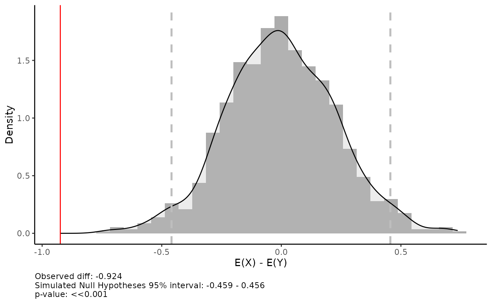

Nonparametric test for comparing means in 2 groups
sdiff.RdNonparametric test for comparing means in 2 groups
Details
This is nonparametric test (alternative to t-test) based on Monte Carlo Simulations. The idea is straightforward. First, the initial difference between the groups is counted. Null hypothesis - this difference is equal to zero, alternative hypothesis - the difference is significantly different from zero. To test this hypothesis, an iterative procedure is created where values from both groups are randomly mixed (i.e. each observation can be randomly assigned to one of the groups). Due to randomness, the difference in the mean of the mixed groups should be zero. After a thousand such procedures, we construct a distribution of the resulting differences and then simply compare it with the observed difference.
Examples
x = rnorm(1000, 10, 10)
y = rnorm(1000, 11, 2)
sdiff(x, y, n = 1000)
#> Warning: The dot-dot notation (`..density..`) was deprecated in ggplot2 3.4.0.
#> ℹ Please use `after_stat(density)` instead.
#> ℹ The deprecated feature was likely used in the csra package.
#> Please report the issue to the authors.
#> `stat_bin()` using `bins = 30`. Pick better value with `binwidth`.
